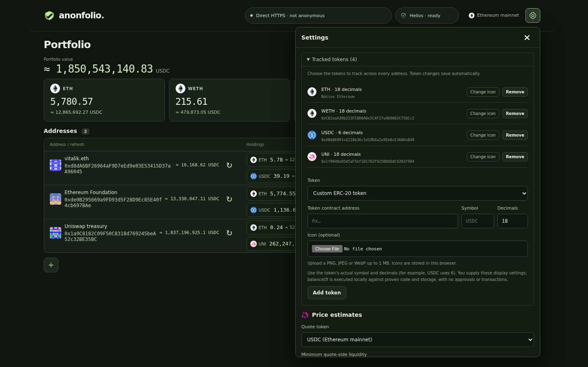

How Anonfolio works
From a pasted address to a verified balance: follow the data, the network route and the checks that connect them.
01Overall explanation
No wallet connection or analytics. Names and saved lists stay in this browser.
Anon-RPC separates address routes. Direct HTTPS is an explicit alternative.
Finalized headers, state witnesses and local EVM execution establish balances.
Anonfolio is a static, browser-based Ethereum mainnet portfolio reader. A user adds addresses to a watchlist, chooses which assets to track, and sees their balances, per-token totals, and estimated portfolio value. ETH and WETH are included initially, and other ERC-20 tokens can be added in Settings. Addresses can have names and locally generated blockie icons. The application never asks the user to connect a wallet or sign a transaction.
The application combines two separate protections. Anon-RPC and Tor provide a private network route in the default Tor mode. Settings also offers explicit Direct HTTPS (not anonymous): providers then see the browser’s IP and requested addresses; this mode never starts Tor. Helios verifies Ethereum state in the browser so an RPC response alone cannot establish a balance. Each refresh uses one verified finalized Ethereum block, and its price estimates use that same block. Finalized state can lag the chain head; displayed results are not reads of the latest unfinalized block.
Price estimates use a 30-minute Uniswap v3 time-weighted average price (TWAP) from one qualifying direct token/quote pool. USDC is the default quote token. A custom ERC-20 quote token can be configured. Missing prices leave the corresponding assets unpriced and make the estimated portfolio total partial.
The browser keeps the watchlist, settings, icons, and previously retrieved values in local storage. A production service worker caches the application files, allowing an already visited page to reopen offline. Cached balances and estimates remain historical until a successful refresh replaces them.
There is no application backend or portfolio database. Bun runs development tools and an optional static server; Vite builds the HTML, JavaScript, CSS, images, and WebAssembly files for an HTTPS host or IPFS gateway.
02Architecture and source map
The main browser thread owns application state and rendering. In Tor mode it communicates with two different workers: the Anon-RPC worker supplies private networking, while the Helios worker performs consensus verification and local contract execution.
In Tor mode, both consensus and execution traffic use Anon-RPC. Consensus has its own isolation key and carries no watched wallet addresses. Ordinary browser HTTP loads local application assets, including the pinned Tor bundle and Helios WASM; it does not query Ethereum execution or beacon endpoints in Tor mode. HTTPS mode deliberately uses ordinary browser fetch for these endpoints, with credentials omitted, no referrer, no redirects, no request caching, and the same method/destination restrictions. Tor failure never selects HTTPS automatically.
Source map · implementation files
| File or directory | Responsibility |
|---|---|
src/main.ts | Page construction, application state, event handlers, refresh orchestration, and rendering. |
src/dom.ts | In-place reconciliation with stable request, phase, block and error identities. |
src/viewport.ts | Portfolio scroll anchoring, visible-log-tail following and open-disclosure height retention. |
src/addresses.ts, src/address-display.ts | Address/name validation and the reusable address/blockie component. |
src/tokens.ts, src/icons.ts | Token definitions, validation, presets, and local icon handling. |
src/connection.ts | Selected connection mode, bounded Tor lifecycle, slow notice, cancellation and startup diagnostics. |
src/https-transport.ts | Explicit, non-anonymous HTTPS capability for configured RPCs and approved consensus URLs. |
src/tor-bootstrap.ts, scripts/update-tor-bootstrap.ts | Bounded public-directory mirror loading and atomic publication. |
src/bootstrap.ts, vendor/tor | Local specifier metadata and unchanged hash-pinned Tor bundle. |
src/config.ts, src/settings.ts | Deployment defaults, runtime network settings, and the Tor worker digest pin. |
src/balances.ts | Wallet/balance models, verification events, and amount formatting. |
src/verification/client.ts | Main-thread sessions and messages to/from the Helios worker. |
src/verification/helios.worker.ts | Shared consensus client, serialized refreshes, verified balance and oracle execution. |
src/verification/transport.ts | The execution RPC capability that uses the explicitly selected transport. |
src/verification/proofs.ts, src/verification/trust.ts | Proof/code checks, block binding, checkpoint policy, and WASM pin. |
src/pricing.ts | Direct-pool discovery, qualification, TWAP calculations, quote caches, and pricing settings. |
src/holdings.ts | Separate current proven zeroes from visible holdings without hiding unavailable or stale reads. |
src/totals.ts | Token totals and rational estimated portfolio totals. |
src/errors.ts | Bounded/redacted failure messages and cause-specific recovery guidance. |
src/storage.ts, src/retries.ts | Persistent snapshots, migrations, and retry scheduling. |
vendor/helios | Reviewed Helios WASM, adapted JavaScript HTTP bridge, license, and review evidence. |
vite.config.ts, scripts | Build configuration, offline shell generation, static serving, and IPFS publishing/checks. |
tests, e2e | Unit/adversarial tests and browser integration tests. |
03Startup and the refresh lifecycle
When the page opens, main.ts loads network configuration, pricing settings, and the saved portfolio. Saved values can render immediately. The application starts the selected connection mode, but restored addresses do not refresh automatically. Click an address’s Refresh button to retrieve new balances and prices. Leaving the page cancels scheduled balance retries; returning does not resume them. New addresses still receive their initial read. The Helios worker is created lazily when verification is first requested.
A refresh follows this sequence:
- Prepare activity for the selected address. An already-running refresh records one follow-up request rather than starting a second copy.
- Wait for the selected transport, then queue the address in the shared verifier. Queued time does not consume its active-session timeout.
- Initialize the pinned Helios binary and synchronize shared consensus if needed. Freeze one verified finalized block hash, state root and timestamp.
- Start balance checks and direct-pool oracle work concurrently at that frozen block. Network witnesses are verified before local execution can use them.
- Save each proven amount immediately. Attach an early quote only after a successful balance proof with the same block hash; unavailable prices do not invalidate proven balances.
- Finish the address attempt, clear active spinners and release the next queued address. Retain historical amounts on failure and schedule bounded recovery.
Addresses have independent UI state and retry schedules, but execution in Helios is serialized across addresses. This keeps one shared consensus client and ensures every execution request has an unambiguous wallet route. A large watchlist therefore queues work rather than executing all wallets' contracts simultaneously.
04Addresses, tokens, and the interface

Address validation happens locally before the watchlist changes. Plain lists accept whitespace, commas, or semicolons. Named lists accept Name | 0x…, one entry per line. Invalid input rejects the addition as a whole; valid addresses are normalized and duplicates are removed. A single-address name field is also available. Names are trimmed, limited to 80 characters, and rejected if they contain control characters.
addressDisplay() renders a blockie, an optional name, and the address. The blockie is an address-seeded, mirrored 8×8 SVG grid generated without a library or network lookup. Full address text stays in the DOM and wraps when necessary. The component is used in table rows; expanded details do not repeat the address. Per-token activity does not repeat the address already displayed above it.
A compact + button below the tracked-address table opens the address form; it supports keyboard activation, announces its expanded state, and retains bulk/named address entry. The form is open on an empty watchlist.
The watchlist shows compact address rows with a blockie/name/address, estimated address value, refresh button and details control. Instead of repeating every tracked token in every address column, each address has a list of its relevant holdings: token icon/symbol, amount, quote estimate and status icon. Successful, verified, uncached zero balances are omitted from address holdings without a zero-count disclosure. Unknown, failed, legacy and cached balances remain visible, including stale nonzero amounts and failed refreshes of earlier zeroes. All-zero addresses retain their identity, estimate and controls without an empty-token list. Tracking, queries and totals still include every configured token; omitting zeroes affects display only.
Desktop rows keep the address and holdings side by side. On phones, holdings wrap below the address without horizontal token scrolling. Financial values are never ellipsized; exceptionally long amounts wrap within their holding. Token-total cards and the overall portfolio value remain above the address list. Ordinary loading updates preserve reserved space. A local SVG chevron opens or closes each address pane. Remove address is at the bottom of expanded details and requires a confirmation showing its name and full address. Confirming removes the address and saved snapshot, cancels scheduled retries and updates totals. It does not undo an already submitted network request.
The tracked-token list applies to every address. Native ETH is represented internally by the identifier eth; ERC-20 assets use their contract addresses. ETH and WETH use the same settings controls as custom tokens and can be removed and re-added. Removing all tokens preserves the address list while stopping balance reads.
Custom token configuration includes a contract address, display symbol, decimals, and optional icon. Token identity is based on the address, so two contracts with the same symbol remain distinct. The symbol is user-supplied display metadata; it is not an authenticated token name.
Icons use bundled assets or local raster uploads. Uploaded PNG, JPEG, and WebP files are limited to 1 MB, decoded in the browser, fitted into a 64×64 canvas, and saved as PNG data URLs. Missing images use a symbol badge. Remote icon URLs and uploaded SVGs are rejected. The application icon is a bundled SVG shared by the header and browser tab.
Settings open behind the top-right gear. The panel contains tracked tokens, price estimates, and network configuration, and closes with Escape, its close button, or interaction outside the panel.
05Connection modes and execution transport
Follow the network route
Interactive illustration only. These controls do not make requests or change app settings.
Tor route
The KPS gateway is a relay-connection bridge, not an Ethereum RPC proxy and not necessarily a Tor exit. A gateway IP such as 152.236.3.22:12298 and an execution URL such as https://eth.drpc.org serve different roles.
Direct HTTPS route
The same Helios verification runs in both modes. A Tor outage never activates direct HTTPS automatically.
The pinned tor-js documentation describes isolation: different keys do not share circuits, but may choose the same exit. Its gateway implementation guide describes the WebRTC/KPS relay bridge. Route separation reduces linkage; it does not guarantee distinct exit IPs or prevent timing correlation.
In Tor mode, one Anon-RPC worker serves the application. Each watched address gets its own random isolation key; consensus uses a different shared key. Keys select circuit contexts locally, not RPC headers or identifiers sent to providers. The app prefers different execution operators for different addresses when available; a larger watchlist can reuse operators. Direct HTTPS strips isolation metadata before ordinary fetch.
| Setting | Default | Role |
|---|---|---|
| Tor gateway | 152.236.3.22:12298 plus its pinned certificate hash | Development KPS bridge; configurable. A plain RPC URL cannot replace it. |
| Execution operators | eth.drpc.org, ethereum-rpc.publicnode.com, rpc.ankr.com/eth | Configured proof/code/block endpoints, in default order; configurable. |
| Consensus provider | ethereum-beacon-api.publicnode.com | Beacon light-client data; origin/path allowlist pinned in source. |
| Directory mirror | ./tor-bootstrap.json | Optional same-origin public bootstrap snapshot; a missing default file is allowed. Settings can choose an HTTPS mirror. |
| Party | Tor mode | Direct HTTPS mode |
|---|---|---|
| App / IPFS host | Browser IP and fetched application files. Hosting traffic is ordinary HTTPS. | Same hosting visibility. |
| KPS gateway | Client IP, encrypted traffic, timing and relay connection targets; not the HTTPS RPC body. | Not used. |
| Tor exit | Destination connection metadata; HTTPS protects the RPC request body. | Not used. |
| Execution RPC | Exit IP; requested account/contract addresses, storage slots and block identifiers. | Browser IP and the same requested execution data. |
| Beacon API | Exit IP and consensus queries on a separate shared route; no watched-wallet list. | Browser IP and consensus queries. |
| Mirror / worker-download host | Browser IP when the public directory mirror is fetched, or a manual worker update is requested. | Same for an explicitly requested worker update; no Tor bootstrap is needed for HTTPS reads. |
| Request | Tor mode | Data / condition |
|---|---|---|
| App, images, Helios WASM, bundled Tor worker | Ordinary browser asset requests | Static files; no watchlist payload. Digests checked before verifier/worker execution. |
| Public directory manifest / archive | Ordinary fetch to app origin or configured HTTPS mirror | Public bootstrap data; freshness, size, SHA-256 and Tor directory signatures checked. |
| Beacon consensus GETs | Anon-RPC, shared consensus isolation key | Approved beacon paths only; no wallet-address payload. |
| Proof, code and execution-block JSON-RPC | Anon-RPC, active address isolation key | Account or contract, requested slots and pinned block. No mixed-address batches. |
| Token and pricing contract calls | Local EVM; witnesses use the address route | No remote balanceOf/observe eth_call. Decimals and symbols are supplied in Settings. |
| Update Tor worker from PublicNode | Explicit, direct HTTPS exception | User action only: reads specifier metadata at one block, downloads HTTPS mirrors and verifies the discovered hash. No watched addresses are sent. |
The last row is a recovery action with a different trust decision. Applying its result trusts PublicNode’s supplied Tor-worker digest/code. Ordinary startup uses bundled local metadata and never discovers a worker over Ethereum RPC.
Tor is the default for fresh installs and legacy saved settings. Direct HTTPS requires an explicit Settings selection, is persisted, and is labeled “not anonymous” in the header. Saving reloads the page so an old Tor/HTTPS capability cannot continue sending requests under a newly selected mode. Both modes retain local Helios consensus/proof/code/storage verification. Direct HTTPS is a networking alternative, never an unverified balance fallback. The configured endpoints are shared between modes; the first default is dRPC’s public HTTPS endpoint, with PublicNode also configured. Execution providers must support finalized-block proofs and EIP-1898 block hashes; Direct HTTPS additionally requires browser CORS support.
Tor startup and directory mirrors
The entire configured gateway pool is passed to one worker. Tor-js performs its own gateway distribution/backoff; the application does not race workers or rotate wallet isolation keys. One public development demo is available by default. No additional production gateway is claimed to be provisioned. Follow gateway deployment to run hosts on separate providers and ship their pinned addresses with VITE_ANON_GATEWAYS. Merely adding ordinary Tor relay IPs cannot replace KPS gateways.
Cold startup has a 30-second soft notice and a five-minute readiness deadline. The same pending worker survives the notice, preserving bootstrap and guard-backoff progress. Cancel aborts startup, closes the worker, clears automatic connection/wallet retries and leaves saved values available. Retry connection explicitly resumes after cancellation. Timeout/error still closes the old worker and ignores late readiness. Header stages are derived only from corresponding directory/gateway/guard/circuit diagnostics; logs retain the underlying warnings. Circuit percentages and live gateway reachability are not invented.
Before creating Tor, the app optionally loads ./tor-bootstrap.json relative to its application base (including an IPFS path), or the configured HTTPS mirror. A six-hour manifest-age limit, an eight-second combined timeout, bounded manifest/archive sizes (4 KiB / 8 MiB), same-origin archive URLs, and SHA-256 checks reject missing/stale/oversized/corrupted mirrors. Requests omit credentials and referrers. Valid bytes enter the existing pinned worker as config.bootstrap; Arti still authenticates directory signatures. Failure falls back to the saved directory or gateways, without direct Ethereum requests. The public-directory request itself contains no wallet data.
bun run bootstrap:update /path/to/gateway/data/bootstrap.zip.zst [output-directory=public] publishes content-addressed bytes and atomically updates the manifest. It refuses source files older than six hours. Refresh hourly beside the gateway and publish to the static document root, or include the files in a new build/IPFS release. An immutable IPFS snapshot expires and then uses ordinary Tor bootstrap unless a maintained HTTPS mirror is configured. No scheduled hosting service is created by the app.
Pinned Tor worker
Connection.get() shares one pending startup promise and one long-lived AnonRpcWorker. The application bundles unchanged Tor worker bytes with its source-pinned hash. Development middleware also serves those exact bytes without Vite transformation or source maps; digest checks remain enabled in both modes. A local metadata provider answers only workerHash() and workerResolvers() for the expected specifier identity; unsupported requests are rejected rather than forwarded to an RPC. By default the only resolver is the same-origin bundled asset. The harness verifies its bytes before starting its sandbox. Startup has no chain lookup or remote resolver fallback. An unavailable or tampered bundle fails closed.
Settings → Tor worker provides an explicit public recovery path in worker-update.ts. Update Tor worker from PublicNode uses ordinary fetch to https://ethereum-rpc.publicnode.com/: first eth_blockNumber, then eth_call for workerHash() and workerResolvers() at that same block on the fixed Tor specifier. It cannot submit arbitrary methods or watched addresses. The on-chain resolver list may mix HTTPS and KPS transports. The manual updater selects HTTPS locations, reports skipped KPS/unsupported entries, and gives a specific error if no HTTPS location remains. Selected HTTPS locations must be free of credentials/fragments. The action downloads a worker directly, verifies its Keccak-256 against the discovered digest, and stores the bytes in the separate anonfolio-user-tor-worker-v1 CacheStorage cache. It displays the hash, block, and URLs before the user saves. Download/discovery failures keep the previous selection and settings.
Saving the updated worker records its hash/resolvers/block in the network settings and reloads. Startup rechecks the cached bytes, creates a local blob URL, and supplies the selected hash and blob resolver to the harness; it performs no public lookup or remote download. Missing/corrupt cache data fails closed and points to Settings, without falling back to remote discovery. Select the bundled worker or Restore defaults to revert. Applying an update explicitly trusts PublicNode's supplied worker digest and code; it does not receive the independent review attached to the release pin. The Helios pin and consensus checkpoint are unchanged. Cached worker bytes can be evicted by the browser; update again or revert if unavailable.
Every wallet receives a random crypto.randomUUID() isolation key and an execution RPC endpoint. New addresses prefer an endpoint not already assigned to another address, then reuse configured endpoints when necessary. Restored addresses receive endpoint assignments from the configured list and fresh isolation keys.
Helios execution traffic is redirected to a synthetic internal URL. It never sends HTTP to that URL. Instead, the Helios worker posts an RPC message to the main thread, which sends an execution request of this shape (the surrounding hard-deadline wrapper enforces the full operation, including the response body):
worker.fetch(wallet.rpcUrl, {
method: 'POST',
headers: { 'content-type': 'application/json' },
body: JSON.stringify(request),
signal: AbortSignal.timeout(90_000),
anonOptions: { isolationKey: wallet.isolationKey },
});
The transport allows only eth_getProof, eth_getCode, eth_getBlockByHash, and eth_getBlockByNumber. It rejects batches and other execution methods, checks HTTP/JSON-RPC success and response IDs, and reports provider rejection codes/messages. The worker separately requires proof and code requests to reference the pinned block hash.
Contract calls execute locally rather than using remote eth_call. Requests for remote access-list hints receive a synthetic unsupported-method response, allowing Helios to demand-load proven dependencies instead. Retries retain the wallet's isolation key and finalized block. Explicit proof-history rejection can select another configured operator as described below. There is no automatic switch to ordinary browser fetch when a private read fails.
The RPC operator still receives the account, code, and storage queries it serves. Isolation keys separate Tor circuits/TLS sessions, but do not promise different exit nodes. In Tor mode the beacon provider receives consensus requests through Tor on a separate shared isolation key. Consensus can continue syncing outside an active wallet session using that route. It is never sent with a wallet’s isolation key. Only explicitly selected HTTPS mode sends it through ordinary browser fetch. Wallet names stay local, and the app adds no analytics or wallet-address URL parameters.
06Consensus and balance verification
Establishing a trusted finalized block
The verifier vendors Helios 0.12.0, including the requested-address and requested-slot checks described in its review documentation. Before initializing WASM, the application downloads the bundled binary and checks its SHA-256 against the source pin.
One consensus light client starts from the independently reviewed release-pinned mainnet checkpoint by default. Settings → Consensus checkpoint can replace it with a user-trusted finalized beacon block root and matching slot. Helios verifies sync committee signatures and finalized headers. The HTTP adapter permits consensus GET requests only to the source-configured beacon origin and an allowed set of beacon/configuration paths. The worker posts them to the main-thread bridge, which uses Anon-RPC with the consensus isolation key and returns the response to Helios. This bridge handles background requests even when there is no active wallet session.
The release default root, slot, and timestamp live in verification/trust.ts. A custom root and slot are validated and saved with browser network settings; older saved settings without a checkpoint keep the release default. Save settings and reconnect reloads the page and creates a fresh shared verifier, so an old consensus session cannot survive a checkpoint change. The UI rejects malformed roots, invalid slots, and checkpoints older than 14 days or more than one minute in the future. The verifier independently repeats those checks on each refresh. Age is computed from the mainnet beacon slot. The bootstrap response must contain the selected slot, and Helios verifies that header against the selected root, preventing an old root from being relabelled with a recent slot. A custom root is a user-chosen trust anchor: compare root and slot across independent trusted mainnet sources; the application does not discover or authenticate the choice for you. Each selected execution block must have valid hash/root fields and a timestamp no more than one hour old or more than one minute in the future. Restore defaults returns to the release-pinned checkpoint, which can itself expire. Binary pins still require a reviewed source update; see the vendored review for release checkpoint evidence and binary hashes.
Each refresh freezes the resulting block hash, number, state root, and timestamp. Different wallets or later refreshes can use different finalized blocks, which is why aggregate displays explicitly identify mixed-block data.
ETH account balances
For native ETH, Helios retrieves the account proof and verifies the account against the finalized state root. The adapter also checks that the proof belongs to the requested address and that its account fields match the proven trie value. A genuine exclusion proof can establish an absent, zero-balance account; a missing or invalid response cannot establish zero.
ERC-20 balances and decimals
For WETH and custom ERC-20 tokens, Helios runs balanceOf(wallet) in its local EVM at the pinned block. It loads contract bytecode and required storage as execution discovers them. Bytecode hashes must match proven account code hashes, and storage values must match Merkle proofs under the corresponding storage root.
This approach does not assume a token's balance mapping lives at a particular slot. Proxy implementation code and storage dependencies follow the same verified execution path. Every requested storage slot must be present in the proof response, preventing an omitted nonzero slot from being interpreted as zero.
Token and quote decimals are always configured display metadata. The verifier executes only balanceOf(wallet) for token balances; it never calls decimals(), and pricing does not make metadata calls either. Built-in ETH/WETH default to 18 decimals and the USDC quote defaults to 6. Configured decimals control display and token totals even when a legacy cache contains different on-chain decimal metadata. Balance authenticity still comes from the finalized account/storage proofs and local EVM execution; decimal precision comes from the user's settings. Cached price estimates are eligible only when their quote precision matches the current configuration.
Result and error messages
verification/client.ts assigns session IDs and relays progress, asset starts, balances, prices, and failures. Parallel execution requests are labelled by their actual RPC method and destination rather than attributing shared WASM transport events to whichever token started most recently. balances.ts applies these events to wallet state. A successful balance stores its raw bigint amount, retrieval time, verified block metadata, and configured decimals.
Each failed asset retains its own error message, failed step, and attempt timestamp, so later progress or another asset's error cannot replace its cause. A short explanation next to the balance opens Details with a styled error card: a clear title, recovery guidance, and compact endpoint/time metadata. Raw errors and distinct failed steps are tucked behind Technical details; repeated transport error text is omitted from the stage. There are no settings shortcut buttons in these cards. Wallet progress text appears only while verification is active, so completed failures do not retain a misleading consensus status above the cards. These failure records survive reloads, including failed first reads with no amount, and clear when that asset is successfully verified. Errors that echo endpoint URLs have credentials, paths, and query strings redacted before display/storage. If an older snapshot has no recorded reason, the UI says so and asks for a refresh to capture one.
Transport errors retain context both while opening the request and while consuming the response body. An interrupted JSON/beacon stream identifies the method and destination instead of surfacing a bare Failed to fetch; local WASM download failures identify the application host. Error cards label consensus, execution RPC, and application destinations separately, and omit an endpoint for legacy generic fetch failures whose destination is unknown. Active progress above historical failures is labelled as a retry so it cannot be mistaken for the recorded failed step.
Tor startup retains the two most recent warning/error messages in memory, with URL credentials and paths redacted and each message bounded to 350 characters. Bootstrap failures and timeouts include those diagnostics on separate lines; the compact header shows only the connection state and a retry action on failure. Failure causes and retry scheduling are available on hover, while detailed progress and Tor diagnostics stay in each address’s retrieval log and failure reports. The header has no worker-log text or Details dropdown; gateway addresses remain available in Settings → Network connection. Structured worker error records preserve nested causes and error codes. Private request failures identify the requested method and endpoint hostname; they never trigger a direct-network fallback. Successful reconnection clears connection errors, while each asset keeps its last failure until its next successful verification.
The Tor tor_memquota warning about unavailable total memory means system-memory detection failed and Tor selected a fallback quota. In a browser/WASM environment this is expected when the underlying OS query is unavailable. The quota controls when tracked data is reclaimed; it is not an immediate allocation, a minimum RAM requirement, or a measurement of the whole application’s memory use. See the Tor quota implementation.
Compact balance statuses sit inline with the amount and price estimate, using local SVG icons with native hover tooltips and accessible labels. The shield/check means verified finalized state (proven zeroes are omitted from the holdings list); saved/stale, unavailable/unverified, and missing-price states use distinct icons. Error-detail icons still open the full failure report. Counts, retry times, numeric prices and detailed progress/errors retain text.
An address’s Refresh button starts reads only for that address, retaining its RPC route and isolation key. Other addresses keep their balances, timestamps, logs and loading state. Loading indicators stay with the selected address; aggregate token cards retain their previous amounts without showing a portfolio-wide loading state, then recompute as verified results arrive. Automatic retries remain independent per address.
The UI distinguishes a proven zero, an unavailable first read, an unverified legacy value, and a stale value retained after failure. Failed verification never creates a new trusted amount. Fatal worker failures terminate the shared worker and reject the active session, while queued addresses remain available for the next verifier. The main thread queues sessions and starts only one at a time. Queued addresses show Queued without a spinner or active timeout. Each active session has a five-minute deadline; time waiting in the queue does not consume it. Network reads and local WASM downloads have separate hard 90-second deadlines covering headers and the entire response body, even if the underlying transport ignores abort. Transport failure or an active-session timeout ends that attempt, terminates the affected verifier, cancels outstanding bridge requests and releases the next queued address. Late events from an obsolete worker are ignored. A completed failure clears wallet/token spinners and re-enables refresh; scheduled retries show a retry status without spinning. Successful results remain available if later asset reads fail.
After selecting a verified finalized block, the worker starts two bounded lanes in parallel: up to two balance proofs/local balanceOf calls and two token oracle jobs at a time. Each oracle checks up to two fee tiers concurrently; pool identity reads and liquidity/history reads also run in groups of two, after their dependencies are verified. Concurrent ETH/WETH estimates share one in-flight direct-pool selection, keyed by pair, window, finalized block hash and liquidity floor. Failed selections are not cached. Active reads drain before a lane releases its wallet route. Distinct wallets remain serialized because the shared Helios client has one active private route. Both lanes use the same wallet isolation key and frozen block. Pricing does not need the holding amount; it can finish before that balance proof. Early quotes remain in memory until a successful balance result with the same block hash arrives. Failed balance proofs never gain a holding value from an early quote, and quotes from another block are discarded. Normal oracle failures do not block the balance lane. A rejected private transport, proof, or code witness fails the shared attempt closed and cancels both lanes; amounts already proved remain available. The progress panel marks Balances and Prices active together, then shows whichever lane is still running.
Each address also has a collapsed Retrieval log. It records application connection messages, verifier/consensus progress, private request submission and response-header/body stages, block selection, balance/price results, failures and retry scheduling. Every entry has a local timestamp with milliseconds and an exact ISO datetime; the time tooltip includes the date and timezone. The stream keeps chronological history across refresh attempts in the current browser session, independently of the latest status line. Multiline failure messages are split into separate timestamped entries, so each retained Tor diagnostic has its own row. Logs are not persisted or sent to analytics. Up to 1,000 entries per address are retained, with an explicit omitted-entry count when older entries are pruned. URL credentials and paths are redacted; request bodies and isolation keys are never serialized into log entries. Rows are created only when the disclosure is open. The log uses the portfolio’s scrollbar, with no separate fixed-height scrolling box. New entries follow only when its latest row was visible in both the portfolio and the browser viewport; reading earlier rows preserves that row’s on-screen position. Open/scroll/focus state survives progress rendering.
The Read history disclosure groups tokens by their verified finalized block hash. Each compact block card shows the finalized block number/time once and a table of per-token last successful read times. Block hashes are retained internally for verification and grouping, without a separate hash display. Different blocks have separate cards; legacy unverified saves and tokens without a successful read have distinct groups. Timestamp elements retain exact ISO datetimes and local time-zone tooltips.
The portfolio owns vertical scrolling. Address details, request previews and log entries flow inside it without creating additional vertical scroll containers. The detail pane and wrapping holdings use the portfolio’s container width. Scrollbar gutters are reserved on the document and portfolio to prevent width changes when scrollbars become necessary, following the CSS Overflow specification.
The progress summary stays mounted and keeps its dimensions after completion, failure and automatic retry. It shows no active timer or current stage when no request is running. At most two active requests are previewed in fixed-size rows; additional requests and full status text remain available in Retrieval log, with hover text on shortened previews. Per-token activity rows reserve their indicator slot and text height. Read errors and Read history use collapsed disclosures, so newly arriving proofs or errors do not insert large blocks above the current progress. A balance’s error icon opens its report directly. An open disclosure retains its measured height until closed to prevent collapsing beneath the reader when an error clears.
Progress rendering reconciles existing DOM nodes by semantic identity: address, token, request ID, verification step, finalized block hash, error asset/kind and log sequence. The viewport restores the visible record rather than merely restoring an old scrollTop; content added above an older log entry therefore does not move that entry on screen. Token-history anchors also follow the same wallet/asset when a newly proved balance moves into another finalized-block card. Existing keyboard focus and open disclosures remain intact. Ordinary balances and status icons share a line; exceptionally large values wrap without losing digits. Token-history anchoring prefers a fully visible token over a clipped preceding token in the same address.
The layout regression suite reproduces and covers these causes:
| Cause | Correction |
|---|---|
| Portfolio, details, request preview and log each constrained their own overflow | One portfolio scroll owner; no nested detail/log scrollbars. |
| New block groups/errors appeared before the progress panel | Stable progress/activity placement; history and errors expand on user action. |
| Completion removed the whole progress panel | A stable idle/failed summary replaces active content in the same slot. |
| Retry button changed the header height by 3–10 pixels | Reserve connection-header height for every state. |
| Long numbers and status text wrapped | Reserved space for ordinary values, wrapping for exceptionally large amounts, and bounded request previews with full hover/log text. |
| Matching same-class cards reused the wrong error/block nodes | Explicit semantic keys retain each report, snapshot and request, including tokens with matching symbols. |
| Restoring pixel scrollTop or following an off-screen log tail moved the reader after updates | Restore the same visible record; follow only a visible log tail. |
| Scrollbar appearance and viewport-based detail width changed available space | Stable gutters and portfolio-relative container sizing. |
Progress uses a completed/total count of planned balance and price checks (two per selected token), including checks that finish with errors. Retries start a fresh count; duplicate completion events are ignored, and unfinished checks are not marked complete on transport failure. This is not a prediction of RPC request count: the EVM discovers bytecode and storage dependencies as it executes. Short request/log labels identify the actual account, token, factory, pool or unknown contract address, with storage-slot counts where available. Pool names are registered by address before local oracle calls, so concurrent balance/pricing requests cannot borrow each other’s current-token label. Full method, target address and endpoint remain in request tooltips.
Shared private-connection status appears only in the application header. Each address’s progress panel follows verifier initialization, consensus sync, balance verification, and price estimates. The compact address-row preview is blank while its details are expanded, so the current request appears in one place. Per-token activity shows token-specific phases and payloads without repeating the connection stage or endpoint on every line. Retry scheduling appears once in the activity summary. A single actionable balance-status icon conveys failures and opens the error report; saved estimates share the balance’s saved/stale indicator and retain their own tooltip. Timestamped Retrieval logs intentionally preserve historical events, including connection messages. Network identity is shown in the header, without a repeated footer. Queued addresses have a separate waiting state. Tokens awaiting their turn are marked Pending; the request preview distinguishes actual submissions and response states from each token’s planned proof operation. Actual private requests show their method, endpoint hostname, elapsed time, and remaining time before the 90-second request timeout. Response headers and body completion are separate transport events; after a response, worker messages describe signature, proof/code checks and local EVM execution. Elapsed clocks measure waiting, not completion percentages. A pending Anon-RPC fetch does not reveal whether time is spent building its route, waiting at the operator, or transporting a response, so the UI does not invent those substeps. Background consensus traffic after block selection does not replace the active wallet’s balance/pricing progress. Worker readiness means the private worker started; the harness does not expose live Tor circuit-building progress or guarantee that an individual endpoint is reachable.
07Direct-pool TWAP estimates
Quote token and pool selection
The default quote is canonical mainnet USDC, 0xA0b86991c6218b36c1d19D4a2e9Eb0cE3606eB48. Settings can select a custom ERC-20 quote contract and liquidity floor. Quote-token holdings are denominated at par in their own units without a pool conversion; internally this uses a ratio of one and the zero address as the pool marker.
Every other estimate uses exactly one direct Uniswap v3 pool. ETH uses WETH as its pricing asset. With USDC selected, both ETH and WETH exclusively use the 0.05% WETH/USDC pool, 0x88e6A0c2dDD26FEEb64F039a2c41296FcB3f5640.
For other pairs, TwapOracle checks fee tiers 100, 500, 3000, and 10000, corresponding to 0.01%, 0.05%, 0.3%, and 1%. It executes getPool(base, quote, fee) against the canonical factory, 0x1F98431c8aD98523631AE4a59f267346ea31F984, and checks the pool's factory, token identities, fee, active liquidity, and slot state.
The selected pool must support observe([1800, 0]). A canonical pool reverts if it lacks the requested history. The application derives harmonic mean liquidity over that window and requires both current and harmonic virtual quote reserves to reach the configured floor, initially 10,000 USDC. When changing quote tokens, the floor is interpreted in the new quote token's units.
Among qualifying candidates, the pool with the greatest harmonic quote-side reserve wins; its address breaks ties. Candidate prices are not blended. A token with a WETH pool but no qualifying direct USDC pool stays unpriced when USDC is selected. Changing the quote token changes the required direct pair rather than introducing a multihop route.
Oracle arithmetic and holding values
The mean tick is calculated from the signed cumulative tick difference divided by 1,800 seconds, rounding negative non-integral results down. The implementation handles the oracle accumulators' wrapping widths. The tick represents a geometric average price, rather than an arithmetic average of spot prices.
tickRatio() computes the raw token1/token0 ratio corresponding to 1.0001^meanTick using bigint exponentiation with 512 fractional bits. Token ordering determines whether the ratio or its inverse converts the base asset into the quote asset. Pool ratios describe raw token units, so multiplying a raw balance by the ratio handles differing base/quote decimals without first converting balances to floating-point numbers.
Holding values remain bigint fractions:
holding value in raw quote units = raw balance × numerator / denominator
The portfolio adds these fractions and reduces them before display conversion. The overview presents a prominent portfolio value with separate priced-holding coverage and tooltip icons for partial, stale and mixed-block results. Each token card also computes its own quote-currency subtotal across addresses using the same rational aggregation. Address coverage and balance provenance are available by hovering the token amount rather than in repeated footer text. It adds each holding’s value at its own verified block/quote rather than applying one address’s price to the aggregate token quantity. A token with no usable quotes shows an unavailable amount; incomplete per-token pricing is explicitly marked partial. The selected quote token and its configured decimals apply to the portfolio and all subtotals. The 30-minute TWAP explanation is available through a methodology icon rather than a long summary sentence. Display rounding of an individual holding never feeds back into the aggregate. The virtual reserve checks use in-range liquidity and square-root prices; they are liquidity filters, not measurements of total TVL or guarantees of proceeds from selling the holding. Estimates exclude swap fees, price impact, and slippage.
Cache and failure behavior
Oracle execution runs alongside the balance loop through the same local EVM, pinned block, and wallet transport. No external price API or public execution shortcut is involved.
TwapOracle keeps two bounded in-memory maps, each limited to 128 entries: pool data keyed by pool/window/block hash, and selected pools keyed by base/quote/window/block/liquidity floor. Cached raw liquidity is normalized again when quoting a pool in reverse. Successful estimates are also stored with their balances for historical display. Qualification failures are not cached as quotes.
An estimate can be displayed only when its quote address, block hash, window, and liquidity setting match the active settings and balance. Changing pricing settings clears stored estimates and refreshes wallets. A missing pool, short history, insufficient liquidity, or failed private request leaves the holding Unpriced without invalidating its proven balance. Oracle-only failures currently require a manual refresh; the balance retry scheduler is driven by balance failures.
08Totals and number formatting
portfolioTotals() sums raw bigint balances separately for each token contract/native identifier. It records coverage, stale values, loading state, block hashes, and configured decimals. Unknown balances are excluded and make coverage partial. Cached or failed historical values can be included with stale indicators.
estimatedTotal() sums usable holding-value fractions in the configured quote token. It reports the number of priced holdings, marks missing prices as partial, labels mixed finalized blocks and stale values, and suppresses the displayed amount if quote decimals conflict across snapshots.
formatBalance() formats values with at most two decimal places using integer arithmetic. It removes trailing zeros and shows a positive amount below 0.01 as <0.01. Native token amounts keep their full precision in storage. Estimated values are converted from their rational representation only on the display path, using additional fractional precision before formatting.
09Persistence, offline use, and retries
| Storage key | Contents |
|---|---|
anonfolio.portfolio.v2 | Current version-3 portfolio snapshot: token definitions/icons, named addresses, balances, finalized provenance, and successful estimates. |
anonfolio.wallets.v1 | Legacy address-only watchlist, consulted when migrating an installation without a current snapshot. |
anonfolio.network.v1 | Browser-local network overrides, including complete configured endpoint URLs. |
anonfolio.pricing.v1 | Quote-token configuration and minimum quote-side liquidity. |
The portfolio storage key retains its older name for migration. Bigint amounts are serialized as decimal strings. Loading validates addresses, token definitions, amounts, timestamps, block metadata, and estimate fields; malformed entries are ignored. Older portfolio formats migrate to the current token/balance structure, and explicitly removed defaults remain removed.
Isolation keys and request payloads are not persisted. Saved values are restored as cached, and legacy entries lacking block provenance require verification. Successful results and watchlist edits are queued for saving under a shared browser Web Lock. Writes merge local edits with the latest stored snapshot; removals take precedence over late balance responses. Storage events synchronize other tabs without starting balance requests, while retaining each tab’s live request state and isolation keys. A current browser on HTTPS or localhost with Web Locks is required for safe persistence; if locking is unavailable, the app warns and retains changes in memory. A blocked or full localStorage leaves the current in-memory session usable and displays a storage warning. The stored portfolio and any credentials in network-setting URLs are accessible to someone with access to that browser origin's storage.
The bundled Tor worker is cached as a local application asset, and is still hash-checked by the harness when loaded. The production service worker is generated by vite.config.ts. It caches an explicit list of built application files, including the WASM binary (HTTPS mode omits the unused Tor bundle from precaching), and removes older application-shell caches on activation. Navigation tries the network and falls back to cached HTML; other shell assets use the cache first. Requests outside that exact asset list, including RPC and worker/gateway traffic, are not intercepted. The first visit still requires a connection, and offline startup cannot retrieve new balances.
RetryQueue maintains one scheduled attempt per address or connection key. Failed balance rounds use delays of 2, 4, 8, 16, 32, then at most 60 seconds. Private-worker reconnects use 2, 4, 8, then at most 10 seconds between attempts. Automatic recovery selects failed or not-yet-verified balances, keeping successful results. Going offline pauses timers; coming online resumes pending work. Manual refresh resets the backoff. Removing an address or leaving the page cancels scheduled retries and active/queued verification. An active cancellation terminates the verifier and aborts its requests; queued cancellation leaves other addresses running. Late responses are ignored. Leaving also closes the private connection, and returning does not restart balance reads.
An execution HTTP attempt has a 90-second timeout, Tor worker readiness has a 30-second soft notice and a five-minute timeout, and a verification session has a five-minute timeout. After a startup timeout, the app closes that worker before retrying and ignores late readiness from old attempts. The pinned Tor worker’s internal per-guard backoff (such as 2m 30s) is separate and is not configurable through the exposed harness API; reconnecting retains its persisted guard selection and other Tor state. Decoded bodies are limited while streaming: execution and consensus responses to 16 MiB, worker updates to 20 MB, PublicNode worker discovery to 256 KiB, and the local Helios binary to 8 MiB. Oversized streams are canceled before parsing or hashing, and abort signals cancel stalled body reads. These bounds keep unavailable routes from waiting indefinitely, although queued work and retries can still make a large refresh take time.
10Configuration, builds, and publishing
The development server uses patched Vite 7.3.7 and binds to 127.0.0.1 by default. The Docker builder copies the HTML guide and image along with application sources; a regression builds from exactly its declared COPY inputs. Deployment defaults come from VITE_ANON_GATEWAYS, VITE_TOR_BOOTSTRAP_URL and VITE_RPC_URLS, with source defaults in config.ts. Browser network settings override those defaults after local validation. The default balance endpoint order starts with dRPC, followed by PublicNode and Ankr. The old bootstrapRpc storage property and VITE_BOOTSTRAP_RPC variable are ignored; saving settings removes that obsolete field while preserving gateway/RPC choices.
Saving network settings closes the old Anon-RPC worker and reloads the page, replacing wallet routes together. Restoring network defaults removes that override rather than clearing the portfolio or pricing configuration. Saving pricing settings instead updates the pricing configuration and refreshes the current wallets without a page reload.
An RPC must support proofs and code queries at the selected finalized block, including EIP-1898 block-hash parameters. A provider whose historical proof window is too short can reject valid requests. An explicit eth_getProof JSON-RPC history/window/pruned-state rejection triggers a bounded switch among the configured execution endpoints. The exact request, pinned finalized block and wallet isolation key remain unchanged, and every attempt still uses worker.fetch. The active session shares its rejected-endpoint set between concurrent balance and pricing reads, so they converge on a usable operator without loops. Later execution requests and refreshes prefer the replacement operator within the browser session. The UI request destination, worker progress and retrieval log identify the switch. No alternate endpoint is tried for a timeout, malformed response, generic RPC error or invalid proof; those failures still stop verification. If the configured endpoints cannot provide the required proofs, the application fails closed, retains unavailable/stale states and asks the user to configure a historical-proof-capable RPC. It never changes to latest/unfinalized state to satisfy a provider’s shorter window. Tor/WebRTC gateway connectivity is required in Tor mode; HTTPS mode needs browser HTTPS/CORS access instead. The shipped Tor gateway is a development demo, and a deployment can configure its own gateway. The checkpoint can be overridden in Settings using a trusted root and matching slot. The Helios WASM pin remains source-controlled. Tor uses the release pin by default; the explicit Settings updater can apply a PublicNode-supplied digest and downloaded worker.
Use the repository's Bun 1.3.14 baseline for dependency changes and its compatible committed lockfile:
bun install --frozen-lockfile
bun run dev
bun run build
bun run serve
The production build type-checks TypeScript and emits dist/. bun run serve serves that directory at port 4173 by default, with HOST and PORT overrides. It accepts GET/HEAD, rejects path traversal and writes, and supplies no RPC proxy. Vite's dependency configuration also supplies an empty browser environment for the trie library's debug check and prebundles the worker dependency, avoiding a Node process reference during development.
Relative asset URLs allow the same build to load beneath an IPFS path or a subdomain gateway. The Docker publisher builds the site, computes a directory CIDv1, publishes/pins the directory to a configured Kubo API, and rejects a returned CID that differs from the build CID. The export script similarly checks the CID before writing a complete CAR and CID text file. bun run ui:docker invokes this flow; it requires an existing Docker engine and reachable Kubo API. It does not select a remote pinning service.
An IPFS release workflow template is supplied separately from active workflows. A subdomain gateway gives each CID a separate browser origin; path gateways can share an origin with other applications. Consequently, localStorage and service-worker behavior depend on the chosen gateway origin, and moving to another CID/subdomain does not automatically migrate saved settings or wallets.
11Testing and maintenance
The tests cover separate boundaries rather than treating mocked UI results as evidence of real proof verification:
| Command | What it checks |
|---|---|
bun run test | Unit tests for parsing, storage, retries, totals, pricing, static serving, and adversarial proof/transport behavior. |
bun run typecheck | TypeScript checking. |
bun run check | Unit tests, type checking, and the production build. |
bun run test:browser | Deterministic Chromium UI scenarios and a real browser-worker proof regression. UI fixtures replace connection/verifier boundaries where appropriate. |
bun run test:static | Production page loading and offline recovery, after building. |
bun run test:all | Unit tests, build, deterministic browser scenarios, and production/offline checks. |
BASE_URL=http://127.0.0.1:4173 bun run test:live | Opt-in real Tor/Helios mainnet balances and TWAPs against a built page. The runner starts the static server if needed. |
bun run test:live:https | Real mainnet ETH/WETH proof verification through explicitly selected HTTPS. |
bun run bootstrap:update SOURCE [DESTINATION] | Publish a fresh public Tor directory mirror. |
bun run test:ipfs | Real local Kubo publishing, CID/CAR checks, and path/subdomain gateway browser scenarios. LIVE_RPC=1 also enables the live mainnet case. |
Install Chromium with bunx playwright install chromium before browser tests. LIVE_BALANCE_RPC can select a specific execution endpoint for the live smoke test. Live checks depend on external gateway/RPC availability and remain separate from deterministic CI checks.
Adversarial tests use generated trie proofs to reject a valid proof for the wrong wallet/block, omitted nonzero storage slots, forged storage values, and tampered bytecode. Transport tests reject public execution fallbacks and verify wallet isolation keys. Pricing tests cover ordering, decimals, ETH/WETH equivalence, history and liquidity failures, direct-only pool selection, reverse cache use, and unpriced WETH-only assets. Browser tests cover persistence, confirmation/cancellation, settings changes, partial estimates, failure recovery, and compact/mobile layouts.
The active GitHub Actions workflow runs the deterministic suite on Bun 1.3.14 and 1.4.3 and retains browser failure artifacts. Before changing Helios, review proof binding, local execution, transport, and background-task behavior, then update the binary pins and review evidence and rerun adversarial/live checks. Checkpoint renewal requires an independently checked root and matching slot, supplied in Settings or through a reviewed release; changing an RPC endpoint cannot renew an expired trust anchor.